Três roteiros para a mesma viagem. A primeira metade é igual em todos: Madri só para trocar de avião, quatro dias em Londres e quatro em Paris, com trem entre as duas. O que muda são os oito dias finais.
Montado a partir das viagens anteriores (Paris em 2017 e 2024, Londres e Espanha em 2022): os clássicos já visitados saíram e entraram pendências antigas, bairros novos e bate-voltas. Os dias marcados com uma dica trazem alternativas para quem vai pela primeira vez.
Voo à tarde para Guarulhos e conexão de poucas horas sem sair da área internacional. Voo noturno para Madri (cerca de 10h30 de voo).
Ideal emitir tudo num bilhete só, multidestino: ida Florianópolis → Londres via São Paulo e Madri, volta Madri → Florianópolis. A bagagem segue despachada até Londres e a companhia responde por eventual perda de conexão.
Chegada a Barajas pela manhã. A imigração e o registro biométrico de entrada na Europa (sistema EES) são feitos aqui. Em seguida, voo de cerca de 2h20 para Londres. Chegada à tarde e check-in. Vale ficar perto de King's Cross, de onde sai o Eurostar; jantar em Coal Drops Yard.
Deixar pelo menos 2h30 entre os voos em Madri: pode haver troca de terminal (o T4S e o T4 são ligados por trem interno) e há controle de passaporte na saída para o Reino Unido.
Abadia de Westminster pela manhã (aos sábados abre em horário reduzido) e Churchill War Rooms, o bunker do governo britânico na guerra. À tarde, barco pelo Tâmisa até Greenwich: Royal Observatory e o meridiano, Cutty Sark e o Painted Hall. À noite, musical no West End.
A Abadia e o War Rooms estavam na lista de pendências de 2022.
Columbia Road Flower Market (só aos domingos), Brick Lane, Old Spitalfields e os grafites de Shoreditch, com bagel no Beigel Bake. À tarde, Little Venice e caminhada pelo Regent's Canal até Primrose Hill para ver a cidade ao pôr do sol. Sunday roast num pub da região.
British Museum pela manhã, outra pendência de 2022. Neal's Yard e Seven Dials na hora do almoço. À tarde, Courtauld Gallery na Somerset House (Manet, Van Gogh, Cézanne em um museu pequeno). Jazz no Ronnie Scott's, no Soho, à noite.
Está previsto o empréstimo da Tapeçaria de Bayeux ao British Museum entre setembro de 2026 e julho de 2027. Confirmar perto da data e reservar horário.
Trem de St Pancras para a Gare du Nord (cerca de 2h20), com controle de fronteira na estação. À tarde, a Paris do leste: Canal Saint-Martin, Belleville com a vista do Parc de Belleville e o Parc des Buttes-Chaumont. Jantar em Belleville.
Bourse de Commerce, a coleção Pinault no antigo prédio da bolsa reformado por Tadao Ando. Galerie Vivienne e as passagens cobertas do 2º arrondissement. À tarde, Musée Carnavalet (história de Paris, gratuito) e Musée Picasso, no Marais. À noite, jazz no Caveau de la Huchette.
Se for a primeira vez de Aline e Frederico em Paris, eles podem trocar a tarde pelo Louvre, que costuma abrir até mais tarde às quartas, e encontrar vocês no jantar.
Cerca de 45 min de TGV a partir da Gare de l'Est. Catedral de Reims, onde eram sagrados os reis da França, com vitrais de Chagall. Visita a uma maison de champanhe com caves subterrâneas (Taittinger, Pommery ou Veuve Clicquot) e almoço na cidade. Volta no fim da tarde.
As visitas às caves exigem reserva e algumas maisons reduzem horários no inverno.
Catacumbas logo cedo, com horário marcado. Feira da Rue Mouffetard e Musée de Cluny, o museu da Idade Média com as tapeçarias da Dama e o Unicórnio. Passada rápida na Notre-Dame, reaberta em dezembro de 2024 depois do incêndio. À tarde, Musée Marmottan Monet, que guarda a tela que deu nome ao Impressionismo. Jantar em Pigalle.
Para quem nunca foi: Torre Eiffel, Orsay e Versalhes ficam como alternativas para esses dois dias.
Sai de Paris de carro direto para a Normandia, desce até a Bretanha e volta pelo Vale do Loire. Termina com três noites em Madri, o maior tempo na cidade entre os três planos.
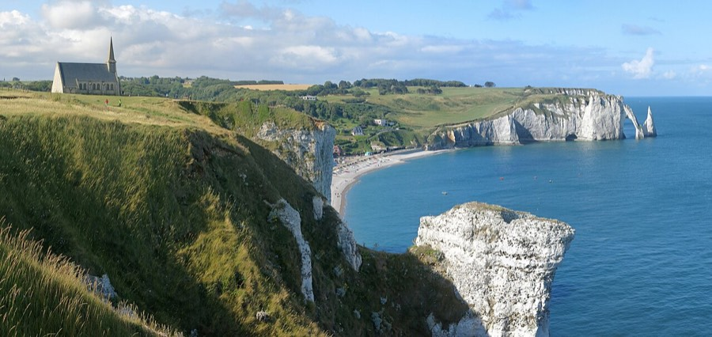
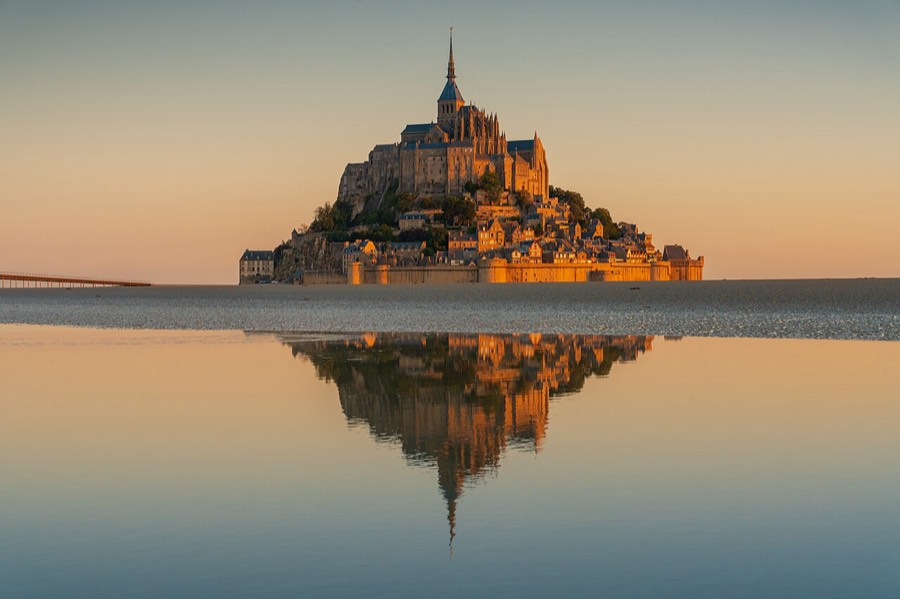
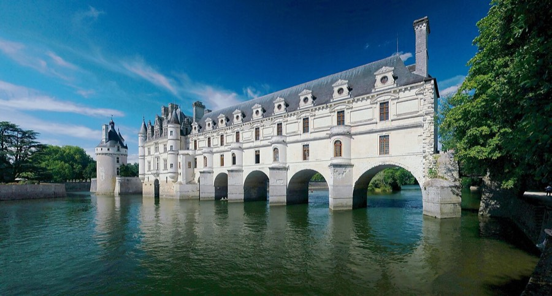
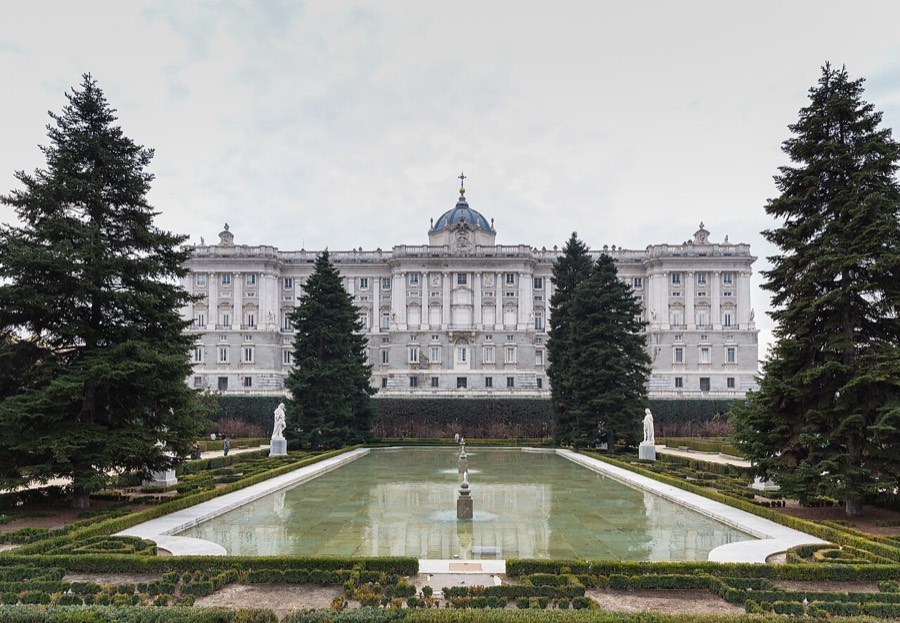
Retirada do carro em Orly ou na periferia, para não dirigir no centro. Catedral e centro medieval de Rouen, falésias de Étretat e noite no porto de Honfleur.
Omaha Beach, Cemitério Americano de Colleville e Pointe du Hoc. Noite em Bayeux, cidade pequena e bem preservada.
Cerca de 2h de estrada. Abadia, vilarejo e a maré da baía. Dormir perto para ver o monte iluminado à noite.
Manhã nas muralhas de Saint-Malo e cerca de 3h até o Vale do Loire. Noite em Amboise.
Château de Chenonceau, castelo de Amboise e Clos Lucé, a última casa de Leonardo da Vinci. Degustação de vinho de Vouvray.
Chambord pela manhã, cerca de 2h até Orly, devolução do carro e voo à tarde para Madri (cerca de 2h).
Museu Sorolla, casa e ateliê do pintor, e o Barrio de Salamanca com o Museu Lázaro Galdiano. À tarde, Malasaña e Chueca, com o terraço do Mercado de San Antón. À noite, flamenco num tablao ou jogo do Atlético no Metropolitano (conferir a tabela).
Bate-volta ao Mosteiro do Escorial (cerca de 1h de trem). Na volta, Ermita de San Antonio de la Florida, com os afrescos de Goya no teto, e pôr do sol no Faro de Moncloa. Jantar de despedida.
Manhã no Matadero e passeio pelo Madrid Río, ou vermute em La Latina, se o horário do voo permitir. Volta via Guarulhos.
Voo de Paris para Sevilha, já conhecida, com só uma noite lá, e carro pela Andaluzia, com duas noites em Cádiz em pleno Carnaval, os pueblos blancos, Ronda, a Alhambra e Córdoba. Volta a Madri de trem-bala. É o plano com melhor clima.
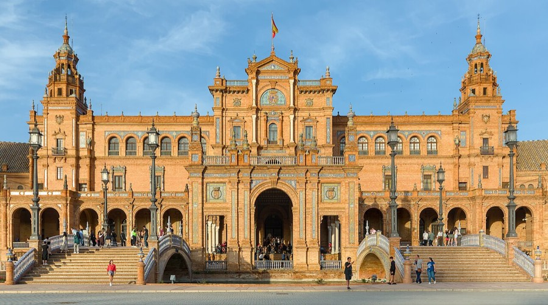
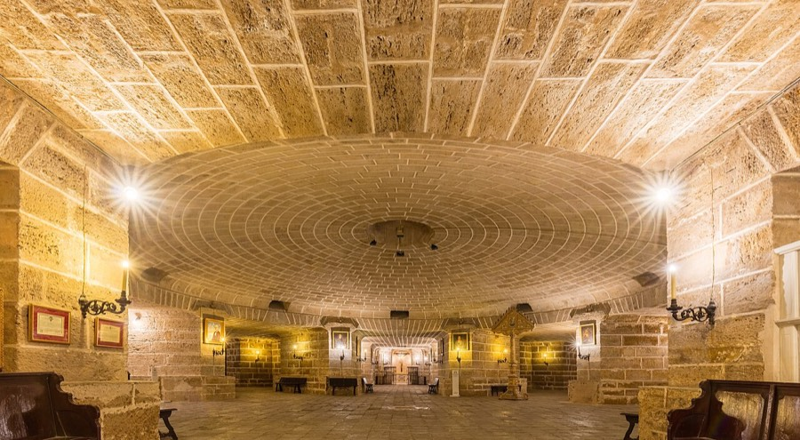
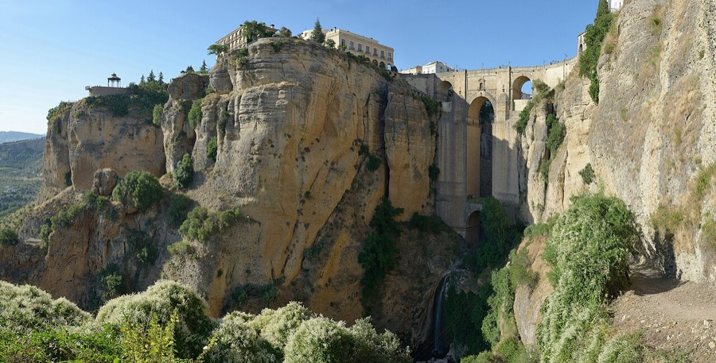
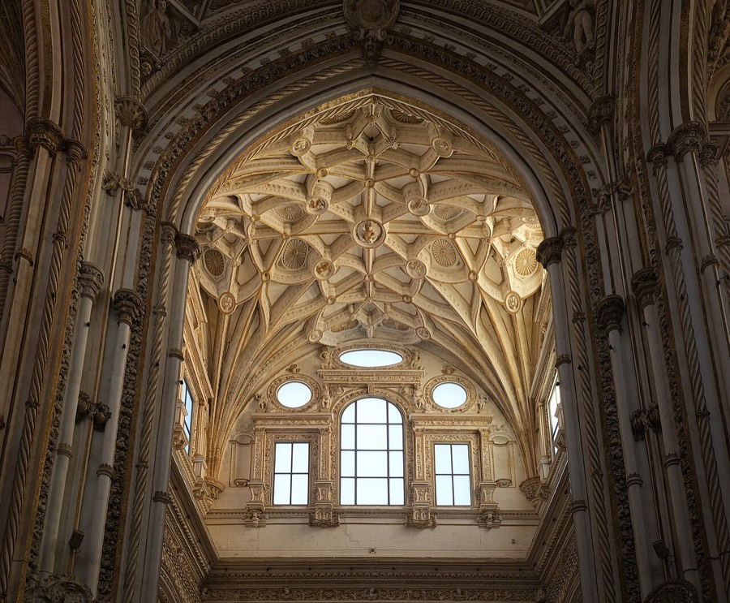
Voo de cerca de 2h30. Como Alcázar, Catedral, Plaza de España e Santa Cruz já foram vistos em 2022, a tarde fica para Triana: mercado, cerâmica e tapas. Espetáculo de flamenco à noite, que ficou de fora daquela viagem.
Casa de Pilatos e Palacio de las Dueñas pela manhã, dois palácios que não entraram em 2022. Retirada do carro, almoço e visita a uma bodega de xerez em Jerez. Noite em Cádiz.
Dia inteiro na cidade: bairro de La Viña, Mercado Central, Torre Tavira e passeio pela muralha do Campo del Sur. À noite, as chirigotas do Carnaval pelas ruas.
A viagem deve coincidir com o Carnaval de Cádiz, um dos mais famosos da Espanha (a terça de Carnaval de 2027 cai em 9 de fevereiro). Hospedagem esgota cedo; as datas oficiais saem no fim do ano.
Arcos de la Frontera e Grazalema pela serra, com chegada a Ronda à tarde. Puente Nuevo e o desfiladeiro ao pôr do sol.
Cerca de 2h de estrada. Albaicín à tarde e Mirador de San Nicolás com vista da Alhambra ao pôr do sol. Tapas grátis com a bebida, costume de Granada.
Alhambra e Generalife, com os Palácios Nazaríes em horário marcado. Banho árabe à noite.
Ingressos da Alhambra esgotam: comprar no site oficial assim que a venda abrir para a data.
Cerca de 2h até Córdoba. Mesquita-Catedral e Judería. Devolução do carro em Córdoba e trem-bala para Madri (cerca de 1h45).
Museu Sorolla e Barrio de Salamanca pela manhã. Ermita de San Antonio de la Florida (afrescos de Goya) e Malasaña à tarde. Flamenco ou jogo do Atlético à noite.
Manhã no Matadero e passeio pelo Madrid Río, ou vermute em La Latina, se o horário do voo permitir. Volta via Guarulhos.
Voo de Paris para Bilbao e carro pelo País Basco e pela Rioja, descendo por Burgos e Segóvia até Madri. É o plano mais gastronômico, com o clima mais úmido.
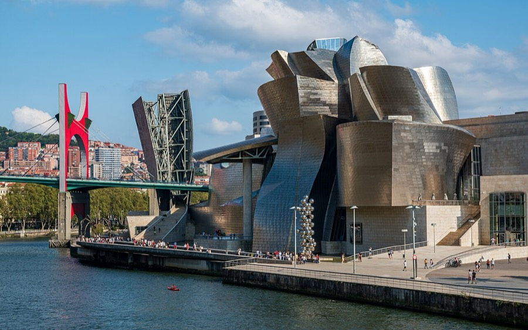
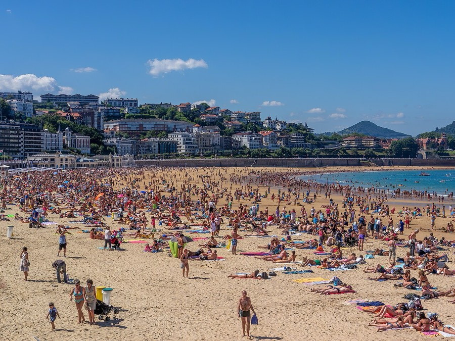
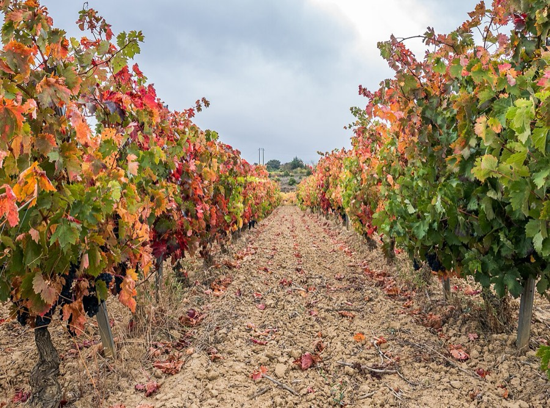
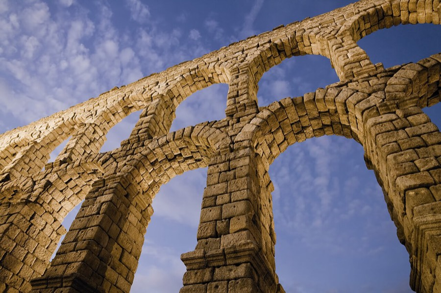
Fonte: AEMET, valores climatológicos normais 1981–2010 (estações de Bilbao Aeroporto, San Sebastián Igueldo, Logroño Agoncillo, Burgos Villafría, Segóvia e Madri Retiro). Na prática, chove em cerca de 4 de cada 10 dias na costa basca; da Rioja para o sul o tempo fica bem mais seco e frio, com geada frequente em Burgos.
Voo de cerca de 1h30 e retirada do carro no aeroporto. Museu Guggenheim e pintxos no Casco Viejo.
San Juan de Gaztelugatxe, a ermida no rochedo, e almoço de peixe na brasa em Getaria com txakoli. Chegada a San Sebastián no fim da tarde.
Praia de La Concha, Monte Igueldo e roteiro de pintxos na Parte Vieja. Opcional: tarde em Biarritz, na França, a 50 min.
Cerca de 2h até Laguardia, vila murada sobre adegas. Visita a bodegas em Elciego e arredores. Noite na região.
Bairro das adegas de Haro pela manhã e cerca de 1h30 até Burgos. Catedral gótica e jantar castelhano.
Cerca de 2h30 até Segóvia: aqueduto romano, Alcázar e cochinillo no almoço. Mais 1h15 até Madri e devolução do carro.
Museu Sorolla, casa e ateliê do pintor, e o Barrio de Salamanca com o Museu Lázaro Galdiano. À tarde, Malasaña e Chueca, com o terraço do Mercado de San Antón. À noite, flamenco num tablao ou jogo do Atlético no Metropolitano (conferir a tabela).
Bate-volta ao Mosteiro do Escorial (cerca de 1h de trem). Na volta, Ermita de San Antonio de la Florida, com os afrescos de Goya no teto, e pôr do sol no Faro de Moncloa. Jantar de despedida.
Manhã no Matadero e passeio pelo Madrid Río, ou vermute em La Latina, se o horário do voo permitir. Volta via Guarulhos.
| A · França e Madri | B · Andaluzia | C · Norte da Espanha | |
|---|---|---|---|
| Saída de Paris | de carro | voo para Sevilha | voo para Bilbao |
| Carro | ~1.000 km | ~600 km | ~800 km |
| Noites em Madri | 3 | 2 | 3 |
| Clima | o mais frio | o mais ameno | o mais chuvoso (86–110 mm no litoral basco) |
| Destaque | Mont-Saint-Michel e castelos | Alhambra e Carnaval de Cádiz | San Sebastián e Rioja |
| Voos internos | 1 (Paris → Madri) | 1 (Paris → Sevilha) | 1 (Paris → Bilbao) |
| Atenção | dias curtos, escurece por volta das 18h | Alhambra e hotel em Cádiz com antecedência | levar capa de chuva e calçado impermeável |
Cartão por aproximação funciona em quase tudo, inclusive no metrô de Londres. Libra só no Reino Unido; euro no restante.